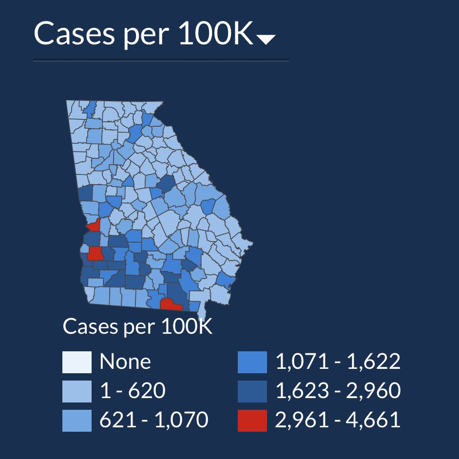
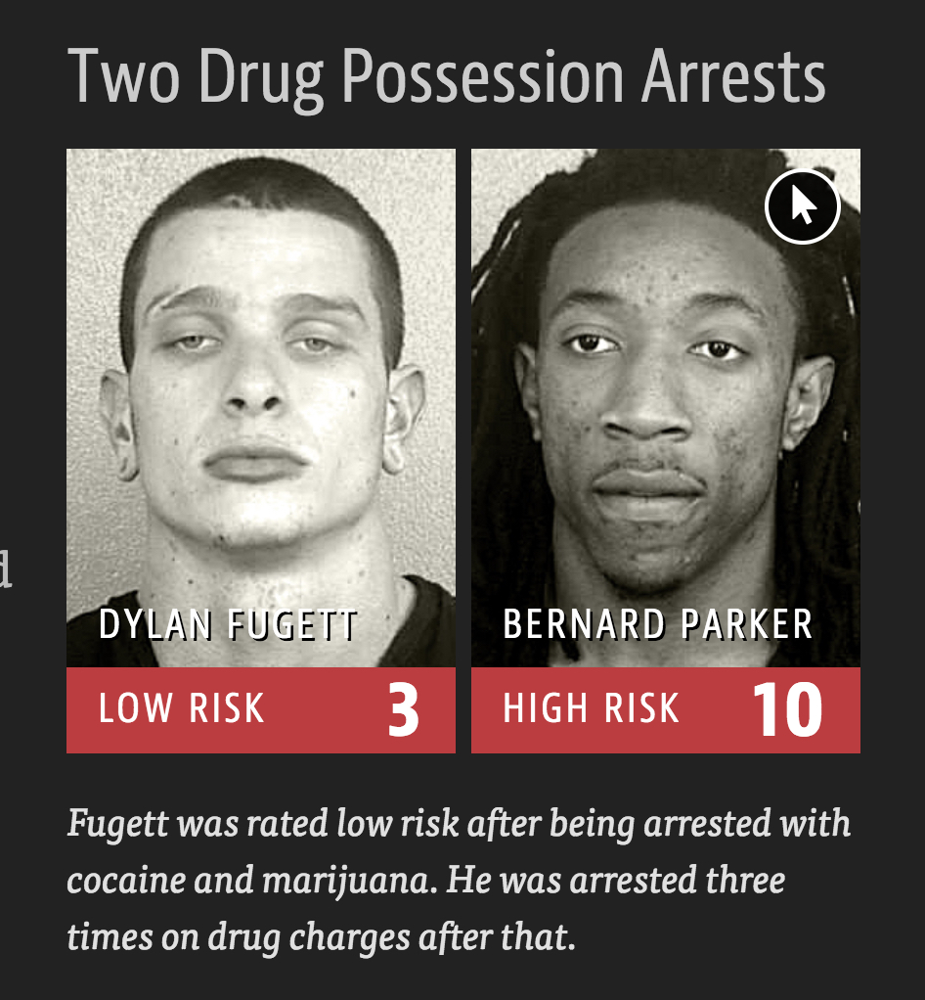

Ethics in Data Science
April 2, 2025
Agenda 4/2/25
- Ethics in Data Viz
- Principles
- Examples
n.b., the majority of examples are taken from Baumer, Kaplan, and Horton (2021) which I encourage you to read!
Data Viz
There are so many ways to use graphics to mislead your reader.
Stand Your Ground
Climate

GA COVID-19 confirmed cases


GA COVID-19 cases per 100K

Examples
It is impossible to predict every ethical quandary that a data scientist might face.
Instead, we tour some examples which help us think carefully about a set of guiding principles.
Predicting Sexuality
Wang and Kosinski (2018) used a deep neural network and logistic regression to build a classifier for sexual orientation based on pictures of people’s faces. The authors claim that if given five images of a person’s face, their model would correctly predict the sexual orientation of 91% of men and 83% of women. The authors highlight the potential harm that their work could do in their abstract:
Additionally, given that companies and governments are increasingly using computer vision algorithms to detect people’s intimate traits, our findings expose a threat to the privacy and safety of gay men and women.
A subsequent article in The New Yorker also notes that:
the study consisted entirely of white faces, but only because the dating site had served up too few faces of color to provide for meaningful analysis.
Was the research ethical? Were the authors justified in creating and publishing this model?
Predicting race
Consider a racial prediction algorithm including published software for the classier under an open-source license as the R package wru (Imai and Khanna 2016). (Trained using US Census Surname Data.)
The main function predict_race() returns predicted probabilities for a person’s race based on either their last name alone, or their last name and their address.
library(tidyverse)
library(wru)
predict_race(voter.file = voters, surname.only = TRUE) |>
select(surname, pred.whi, pred.bla, pred.his, pred.asi, pred.oth) surname pred.whi pred.bla pred.his pred.asi pred.oth
1 Khanna 0.045110474 0.003067623 0.0068522723 0.860411906 0.084557725
2 Imai 0.052645440 0.001334812 0.0558160072 0.719376581 0.170827160
3 Rivera 0.043285692 0.008204605 0.9136195794 0.024316883 0.010573240
4 Fifield 0.895405704 0.001911388 0.0337464844 0.011079323 0.057857101
5 Zhou 0.006572555 0.001298962 0.0005388581 0.982365594 0.009224032
6 Ratkovic 0.861236727 0.008212824 0.0095395642 0.011334635 0.109676251
7 Johnson 0.543815322 0.344128607 0.0272403940 0.007405765 0.077409913
8 Lopez 0.038939877 0.004920643 0.9318797791 0.012154125 0.012105576
10 Wantchekon 0.330697188 0.194700665 0.4042849478 0.021379541 0.048937658
9 Morse 0.866360147 0.044429853 0.0246568086 0.010219712 0.054333479Given the long history of systemic racism in the United States, it is clear how this software could be used to discriminate against people of color.
What if we partnered with a progressive voting rights organization that wanted to use racial prediction to target members of a particular ethnic group to help them register to vote?
Was the publication of this model ethical? Does the open-source nature of the code affect your answer? Is it ethical to use this software? Does your answer change depending on the intended use?
Data scraping
“The OkCupid data set: A very large public data set of dating site users” (Kirkegaard and Bjerrekær 2016):
- 2,620 variables
- including usernames, gender, and dating preferences
- 68,371 people scraped from the OkCupid dating website
The data scraping did not involve any illicit technology such as breaking passwords. Nonetheless, the author received many challenges to the work as an ethical breach and accusing him of doxing people by releasing personal data.
Does the work raise ethical issues?
Reproducible spreadsheet
“Growth in a Time of Debt” (Reinhart and Rogoff 2010) argued that countries which pursued austerity measures did not necessarily suffer from slow economic growth.
Thomas Herndon requested access to the data and analysis contained in the paper. After receiving the original spreadsheet from Reinhart, Herndon found several errors.
I clicked on cell L51, and saw that they had only averaged rows 30 through 44, instead of rows 30 through 49.” —Thomas Herndon (Roose 2013)
In a critique of the paper, Herndon, Ash, and Pollin (2013) point out coding errors, selective inclusion of data, and odd weighting of summary statistics that shaped the conclusions of Reinhart and Rogoff (2010).
What ethical questions does publishing a flawed analysis raise?
Principles
Ethical guidelines for data science are given in the Data Values and Principles manifesto published by DataPractices.org.
It includes four values (inclusion, experimentation, accountability, and impact) and 12 principles that provide a guide for the ethical practice of data science.
12 principles
As data teams, we aim to…
Use data to improve life for our users, customers, organizations, and communities.
Create reproducible and extensible work.
Build teams with diverse ideas, backgrounds, and strengths.
Prioritize the continuous collection and availability of discussions and metadata.
Clearly identify the questions and objectives that drive each project and use to guide both planning and refinement.
Be open to changing our methods and conclusions in response to new knowledge.
Recognize and mitigate bias in ourselves and in the data we use.
Present our work in ways that empower others to make better-informed decisions.
Consider carefully the ethical implications of choices we make when using data, and the impacts of our work on individuals and society.
Respect and invite fair criticism while promoting the identification and open discussion of errors, risks, and unintended consequences of our work.
Protect the privacy and security of individuals represented in our data.
Help others to understand the most useful and appropriate applications of data to solve real-world problems.
Principles in action
To think clearly about ethics, we need to apply principles directly to the examples…
Predicting sexuality
principle 1: Does the prediction of sexual orientation based on facial recognition improve life for communities?
principle 9: As noted in the abstract, the researchers did consider the ethical implications of their work,
principle 11: but did they protect the privacy and security of the individuals presented in their data?
principle 7: The exclusion of non-white faces from the study casts doubt on whether the authors recognized their own biases.
Predicting race
using this software to discriminate against historically marginalized people would violate some combination of principles 3, 7, and 9.
is it ethical to use this software to try and help underrepresented groups if those same principles are not violated?
The authors of the wru package admirably met principle 2, but they may not have fully adhered to principle 9.
Data scraping
stakeholders: OKCupid users (principles 1, 9, 11)
- research involving humans requires that the human not be exposed to any risk for which consent has not been explicitly given. The OkCupid members did not provide such consent.
- the data contain information that makes it possible to identify individual humans, there is a realistic risk of the release of potentially embarrassing information, or worse, information that jeopardizes the physical safety of certain users.
stakeholders: OKCupid itself (principle 4)
- were the terms of agreement (set by OKCupid) violated?
Reproducible spreadsheet
principle 10 was met: Reinhart and Rogoff shared their work when it was challenged
principle 2 is violated: Microsoft Excel, the tool used by Reinhart and Rogoff, is an unfortunate choice because it mixes the data with the analysis.
Your role
Individual control:
- create reproducible and extensible work
- Clearly identify the questions and objectives that drive each project and use to guide both planning and refinement.
- Be open to changing our methods and conclusions in response to new knowledge.
- Present our work in ways that empower others to make better-informed decisions.
Institutional control:
- Build teams with diverse ideas, backgrounds, and strengths.
- Protect the privacy and security of individuals represented in our data.
Algorithms
disparate treatment \(\rightarrow\) means that the differential treatment is intentional
disparate impact \(\rightarrow\) means that the differential treatment is unintentional or implicit (some examples include advancing mortgage credit, employment selection, predictive policing)
COMPAS

COMPAS
| DYLAN FUGETT | BERNARD PARKER |
|---|---|
| Prior Offense | Prior Offense |
| 1 attempted burglary | 1 resisting arrest without violence |
| LOW RISK - 3 | HIGH RISK - 10 |
| Subsequent Offenses | Subsequent Offenses |
| 3 drug possessions | None |
COMPAS

References
Baumer, Ben, Daniel Kaplan, and Nicholas Horton. 2021. Modern Data Science with r. CRC Press. https://mdsr-book.github.io/mdsr2e/.
Herndon, Thomas, Michael Ash, and Robert Pollin. 2013. “Does High Public Debt Consistently Stifle Economic Growth? A Critique of Reinhart and Rogo ff.” Working Papers wp322. Political Economy Research Institute, University of Massachusetts at Amherst. https://ideas.repec.org/p/uma/periwp/wp322.html.
Imai, Kosuke, and Kabir Khanna. 2016. “Improving Ecological Inference by Predicting Individual Ethnicity from Voter Registration Records.” Political Analysis 24 (2): 263–72. https://doi.org/10.1093/pan/mpw001.
Kirkegaard, Emil O. W., and Julius D. Bjerrekær. 2016. “The OKCupid Dataset: A Very Large Public Dataset of Dating Site Users.” Open Differential Psychology, November. https://doi.org/10.26775/odp.2016.11.03.
Reinhart, Carmen M, and Kenneth S Rogoff. 2010. “Growth in a Time of Debt.” Working Paper 15639. Working Paper Series. National Bureau of Economic Research. https://doi.org/10.3386/w15639.
Roose, Kevin. 2013. “Meet the 28-Year-Old Grad Student Who Just Shook the Global Austerity Movement.” New York Magazine. http://nymag.com/daily/intelligencer/2013/04/grad-student-who-shook-global-austerity-movement.html.
Wang, Y., and M. Kosinski. 2018. “Deep Neural Networks Are More Accurate Than Humans at Detecting Sexual Orientation from Facial Images.” Journal of Personality and Social Psychology 114 (2): 246–57.
Reuse
CC-BY-SA-4.0